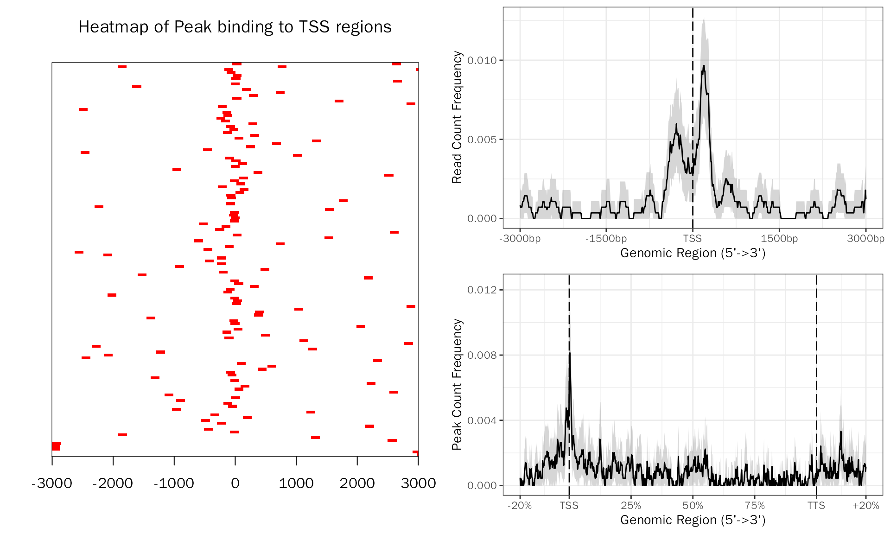
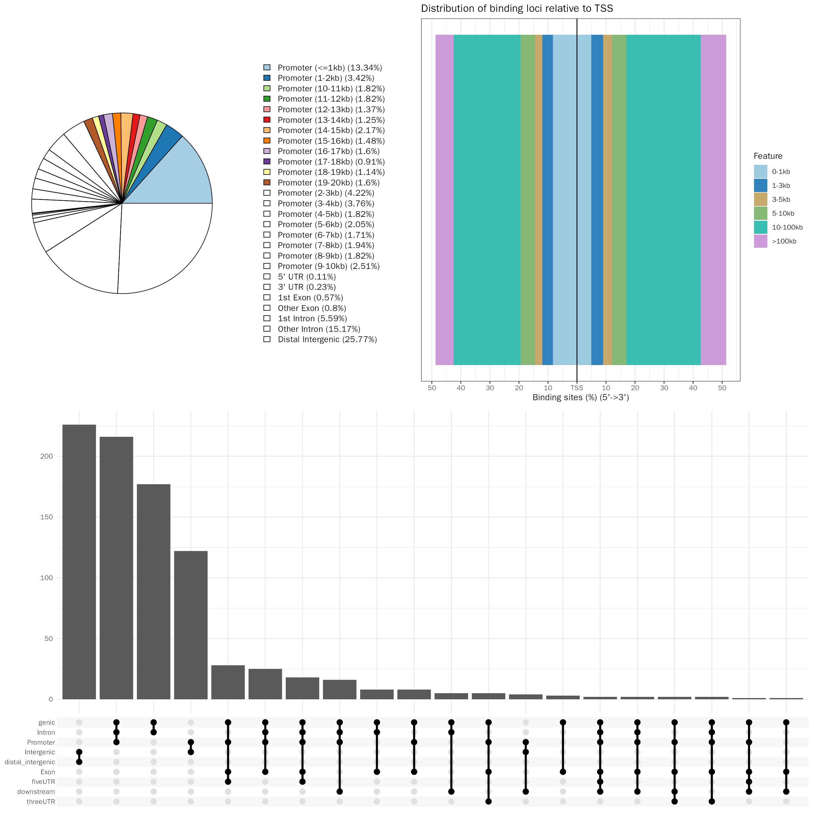
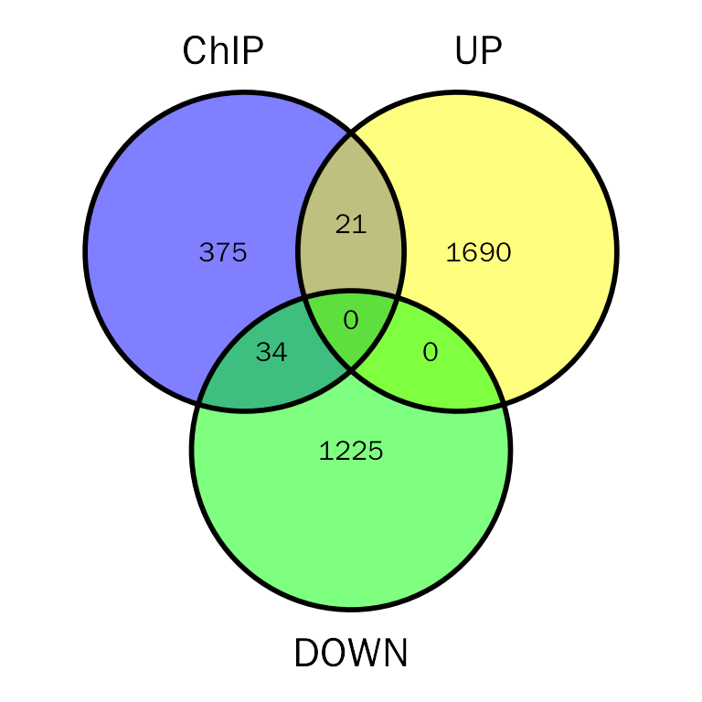
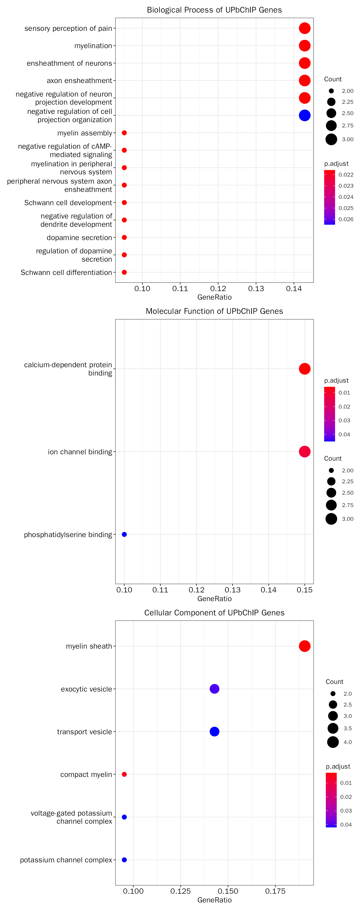
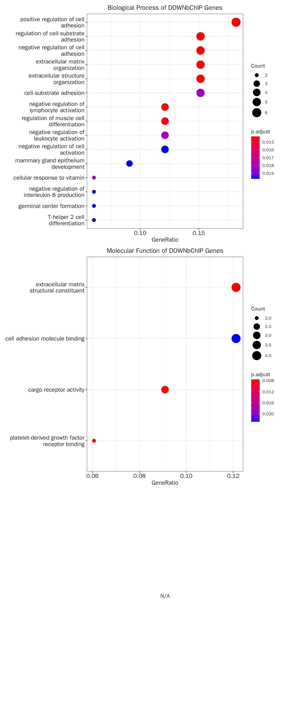

IntegrateChIP.RmdGene expression is controlled by transcription factors (TFs), which binding to DNA recognition sites located near their target genes. Chromatin Immunoprecipitation Sequencing (ChIP-Seq) can be used to profile genome-wide protein–DNA interactions, such as identifying sites of TFs binding. Therefore, ChIP-Seq can be used to reveal mechanisms involved in differential gene regulation.
DEbPeak implements functions to integrate RNA-seq and ChIP-seq, which can be used to investigate the direct and indirect targets of a TF, thus revealing the regulation network of gene expression.
The data used here contains RNA-seq and ChIP-seq datasets from RUNX represses Pmp22 to drive neurofibromagenesis:
# library
suppressWarnings(suppressMessages(library(DESeq2)))
suppressWarnings(suppressMessages(library(DEbPeak)))
# prepare count matrix and metadata
debchip.count.file <- system.file("extdata", "debchip_count.txt", package = "DEbPeak")
debchip.meta.file <- system.file("extdata", "debchip_meta.txt", package = "DEbPeak")
debchip.count.matrix <- read.table(file = debchip.count.file, header = T, sep = "\t")
debchip.meta.info <- read.table(file = debchip.meta.file, header = T)
# create DESeqDataSet object
debchip.dds <- DESeq2::DESeqDataSetFromMatrix(countData = debchip.count.matrix,
colData = debchip.meta.info,
design = ~condition)## Warning in DESeqDataSet(se, design = design, ignoreRank): some variables in
## design formula are characters, converting to factors
# set control level
debchip.dds$condition <- relevel(debchip.dds$condition, ref = "NF")
# conduct differential expressed genes analysis
debchip.dds <- DESeq(debchip.dds)## estimating size factors## estimating dispersions## gene-wise dispersion estimates## mean-dispersion relationship## final dispersion estimates## fitting model and testing
# extract results
debchip.dds.results <- results(debchip.dds,contrast=c("condition",'RX','NF'))
debchip.dds.results.ordered <- debchip.dds.results[order(debchip.dds.results$log2FoldChange,decreasing = TRUE),]
head(debchip.dds.results.ordered)## log2 fold change (MLE): condition RX vs NF
## Wald test p-value: condition RX vs NF
## DataFrame with 6 rows and 6 columns
## baseMean log2FoldChange lfcSE stat pvalue padj
## <numeric> <numeric> <numeric> <numeric> <numeric> <numeric>
## Sycp1 12.07541 7.15056 3.91075 1.82844 6.74840e-02 1.81006e-01
## Gm16532 10.07020 6.89407 1.74281 3.95573 7.63014e-05 7.17146e-04
## Hs3st4 18.88787 6.82852 1.42952 4.77679 1.78117e-06 2.83848e-05
## Nell1 34.13399 6.80718 1.34257 5.07027 3.97260e-07 7.79916e-06
## Sptssb 9.39376 6.78558 1.52948 4.43651 9.14275e-06 1.16684e-04
## Myo3a 7.19992 6.41077 1.74865 3.66612 2.46259e-04 1.94151e-03Due to the high noise of ChIP-seq experiments, control samples can be used to remove possible nonspecific interactions. Besides control samples, replicates are another way to separate actual biological events from variability resulting from random chance. The peaks which have high consistency between replicates are likely to be genuine signals, and we call these peaks consensus peaks. In this step, we will get consensus peaks with MSPC when multiple peak files are available, but when there is only one peak file, we will use it directly (make sure this peak file contains five columns: “chr”, “start”, “stop”, “name”, “score”).
# get consensus peak
peak.file = system.file("extdata", "debchip_peaks.bed", package = "DEbPeak")
peak.df = GetConsensusPeak(peak.file = peak.file)
head(peak.df)## chr start stop name score
## 1 chr13 51519018 51519164 chr13-5 27.6
## 2 chr13 21326999 21327145 chr13-6 25.2
## 3 chr5 151112840 151112986 chr5-2 22.3
## 4 chr11 104361891 104362037 chr11-98 21.8
## 5 chr11 70198551 70198697 chr11-88 21.3
## 6 chr6 29326952 29327098 chr6-4 20.8Check the profle of consensus peaks:
# peak profile plot
peak.profile = PeakProfile(peak.df ,species="Mouse", by = "gene", region.type = "body", nbin = 800)## >> preparing promoter regions... 2022-12-12 12时44分30秒
## >> preparing tag matrix... 2022-12-12 12时44分30秒
## >> preparing start_site regions by ... 2022-12-12 12时44分30秒
## >> preparing tag matrix... 2022-12-12 12时44分30秒
## >> generating figure... 2022-12-12 12时44分39秒## >> done... 2022-12-12 12时44分39秒## >> binning method is used...2022-12-12 12时44分40秒
## >> preparing start_site regions by gene... 2022-12-12 12时44分40秒
## >> preparing tag matrix by binning... 2022-12-12 12时44分40秒
## >> Running bootstrapping for tag matrix... 2022-12-12 12时44分43秒
## >> binning method is used...2022-12-12 12时44分43秒
## >> preparing body regions by gene... 2022-12-12 12时44分43秒
## >> preparing tag matrix by binning... 2022-12-12 12时44分43秒
## >> preparing matrix with extension from (TSS-20%)~(TTS+20%)... 2022-12-12 12时44分43秒
## >> 1 peaks(0.1536098%), having lengths smaller than 800bp, are filtered... 2022-12-12 12时44分46秒
## >> Running bootstrapping for tag matrix... 2022-12-12 12时45分22秒
peak.profile$profile.plot
In this step, we will perform peak annotation with ChIPseeker. This will include annotating peaks with its nearby genes, assigning genomic region of the peaks, et al.
# peak annotation
peak.anno = AnnoPeak(peak.df = peak.df,species = "Mouse",seq.style = "UCSC",up.dist = 20000,down.dist = 20000)## ## >> preparing features information... 2022-12-12 12时45分23秒
## >> identifying nearest features... 2022-12-12 12时45分24秒
## >> calculating distance from peak to TSS... 2022-12-12 12时45分24秒
## >> assigning genomic annotation... 2022-12-12 12时45分24秒
## >> adding gene annotation... 2022-12-12 12时45分35秒## 'select()' returned 1:many mapping between keys and columns## >> assigning chromosome lengths 2022-12-12 12时45分35秒
## >> done... 2022-12-12 12时45分35秒## Warning: Removed 6 rows containing non-finite values (stat_count).
peak.anno.df = peak.anno$df
head(peak.anno.df)## seqnames start end width strand name score
## 1 chr13 51519019 51519164 146 * chr13-5 27.6
## 2 chr13 21327000 21327145 146 * chr13-6 25.2
## 3 chr5 151112841 151112986 146 * chr5-2 22.3
## 4 chr11 104361892 104362037 146 * chr11-98 21.8
## 5 chr11 70198552 70198697 146 * chr11-88 21.3
## 6 chr6 29326953 29327098 146 * chr6-4 20.8
## annotation geneChr geneStart
## 1 Intron (ENSMUST00000021898.5/20418, intron 1 of 11) 1 51431041
## 2 Promoter (9-10kb) 1 21317258
## 3 Promoter (4-5kb) 2 151095421
## 4 Intron (ENSMUST00000106977.7/76719, intron 4 of 13) 3 104334921
## 5 Promoter (14-15kb) 3 70212752
## 6 Promoter (7-8kb) 4 29319199
## geneEnd geneLength geneStrand geneId transcriptId distanceToTSS
## 1 51567084 136044 2 20418 ENSMUST00000021898.5 47920
## 2 21319624 2367 1 75512 ENSMUST00000136668.1 9742
## 3 151108735 13315 2 243362 ENSMUST00000202866.1 -4106
## 4 104341299 6379 2 76719 ENSMUST00000069188.6 -20593
## 5 70216413 3662 1 216867 ENSMUST00000126388.7 -14055
## 6 29335854 16656 1 330277 ENSMUST00000166462.1 7754
## ENSEMBL SYMBOL
## 1 ENSMUSG00000021448 Shc3
## 2 ENSMUSG00000004341 Gpx6
## 3 ENSMUSG00000016128 Stard13
## 4 ENSMUSG00000018412 Kansl1
## 5 ENSMUSG00000040938 Slc16a11
## 6 ENSMUSG00000039742 Fam71f1
## GENENAME
## 1 src homology 2 domain-containing transforming protein C3
## 2 glutathione peroxidase 6
## 3 StAR-related lipid transfer (START) domain containing 13
## 4 KAT8 regulatory NSL complex subunit 1
## 5 solute carrier family 16 (monocarboxylic acid transporters), member 11
## 6 family with sequence similarity 71, member F1
## anno
## 1 Intron
## 2 Promoter
## 3 Promoter
## 4 Intron
## 5 Promoter
## 6 Promoter
peak.anno$plots
In this step, we will integrate ChIP-seq and RNA-seq to get plausible direct targets of TF (in this example, Runx). ### Integrate
debchip.res = DEbPeak(de.res = debchip.dds.results.ordered, peak.res = peak.anno.df, peak.anno.key = "Promoter", merge.key="SYMBOL")## Differential expression analysis with DESeq2!
head(debchip.res)## SYMBOL geneId annotation anno ENSEMBL
## 1 0610012G03Rik <NA> <NA> <NA> <NA>
## 2 1110002J07Rik 68488 Promoter (12-13kb) Promoter <NA>
## 3 1110008P14Rik <NA> <NA> <NA> <NA>
## 4 1110032F04Rik <NA> <NA> <NA> <NA>
## 5 1500009C09Rik <NA> <NA> <NA> <NA>
## 6 1500011B03Rik <NA> <NA> <NA> <NA>
## GENENAME log2FoldChange abundance signif regulation
## 1 <NA> 1.837668 59.179193 3.073773 Up_regulated
## 2 RIKEN cDNA 1110002J07 gene NA NA NA <NA>
## 3 <NA> 1.013546 125.765543 2.277566 Up_regulated
## 4 <NA> 2.935223 89.091244 4.714179 Up_regulated
## 5 <NA> 3.183848 9.432253 1.492741 Up_regulated
## 6 <NA> 1.058984 227.077738 2.656922 Up_regulated
## Type
## 1 UP
## 2 Peak
## 3 UP
## 4 UP
## 5 UP
## 6 UP
# DE and ChIP venn plot
debchip.plot = PlotDEbPeak(debchip.res, peak.type = "ChIP", show_percentage=FALSE)
debchip.plot
# functional enrichment on direct targets
debchip.fe.results = DEbPeakFE(de.peak = debchip.res, peak.type = "ChIP", gene.type = "ENTREZID", species="Mouse",save = F)## conduct ALL GO enrichment analysis on: UPbChIP## wrong orderBy parameter; set to default `orderBy = "x"`## Scale for 'y' is already present. Adding another scale for 'y', which will
## replace the existing scale.## wrong orderBy parameter; set to default `orderBy = "x"`## Scale for 'y' is already present. Adding another scale for 'y', which will
## replace the existing scale.## wrong orderBy parameter; set to default `orderBy = "x"`## Scale for 'y' is already present. Adding another scale for 'y', which will
## replace the existing scale.## conduct ALL GO enrichment analysis on: DOWNbChIP## wrong orderBy parameter; set to default `orderBy = "x"`## Scale for 'y' is already present. Adding another scale for 'y', which will
## replace the existing scale.## wrong orderBy parameter; set to default `orderBy = "x"`## Scale for 'y' is already present. Adding another scale for 'y', which will
## replace the existing scale.
up.debchip.fe.results=debchip.fe.results[["UPbChIP"]][["GO"]]
head(up.debchip.fe.results[["table"]])## ONTOLOGY ID Description
## GO:0032288 BP GO:0032288 myelin assembly
## GO:0019233 BP GO:0019233 sensory perception of pain
## GO:0043951 BP GO:0043951 negative regulation of cAMP-mediated signaling
## GO:0022011 BP GO:0022011 myelination in peripheral nervous system
## GO:0032292 BP GO:0032292 peripheral nervous system axon ensheathment
## GO:0014044 BP GO:0014044 Schwann cell development
## GeneRatio BgRatio pvalue p.adjust qvalue
## GO:0032288 2/21 23/23328 0.0001930551 0.02159856 0.01416299
## GO:0019233 3/21 146/23328 0.0002940462 0.02159856 0.01416299
## GO:0043951 2/21 30/23328 0.0003306741 0.02159856 0.01416299
## GO:0022011 2/21 31/23328 0.0003532875 0.02159856 0.01416299
## GO:0032292 2/21 31/23328 0.0003532875 0.02159856 0.01416299
## GO:0014044 2/21 34/23328 0.0004255310 0.02159856 0.01416299
## geneID Count
## GO:0032288 Pmp22/Prx 2
## GO:0019233 Kcnip3/Npy2r/Prx 3
## GO:0043951 Npy2r/Rnf157 2
## GO:0022011 Pmp22/Prx 2
## GO:0032292 Pmp22/Prx 2
## GO:0014044 Pmp22/Prx 2
up.debchip.fe.results[["plot"]]
down.debchip.fe.results=debchip.fe.results[["DOWNbChIP"]][["GO"]]
head(down.debchip.fe.results[["table"]])## ONTOLOGY ID Description
## GO:0010810 BP GO:0010810 regulation of cell-substrate adhesion
## GO:0045785 BP GO:0045785 positive regulation of cell adhesion
## GO:0007162 BP GO:0007162 negative regulation of cell adhesion
## GO:0030198 BP GO:0030198 extracellular matrix organization
## GO:0043062 BP GO:0043062 extracellular structure organization
## GO:0051250 BP GO:0051250 negative regulation of lymphocyte activation
## GeneRatio BgRatio pvalue p.adjust qvalue
## GO:0010810 5/33 214/23328 1.193628e-05 0.01428434 0.008185655
## GO:0045785 6/33 435/23328 2.935433e-05 0.01428434 0.008185655
## GO:0007162 5/33 290/23328 5.117751e-05 0.01428434 0.008185655
## GO:0030198 5/33 302/23328 6.201521e-05 0.01428434 0.008185655
## GO:0043062 5/33 303/23328 6.299252e-05 0.01428434 0.008185655
## GO:0051250 4/33 158/23328 7.112535e-05 0.01428434 0.008185655
## geneID Count
## GO:0010810 Col8a1/Fbln2/Mmp14/Postn/Sdc4 5
## GO:0045785 Col8a1/Fbln2/Il4ra/Ptpn22/Sdc4/Tnfsf13b 6
## GO:0007162 Il4ra/Mmp14/Postn/Ptpn22/Sdc4 5
## GO:0030198 Bcl3/Col8a1/Fbln2/Mmp14/Postn 5
## GO:0043062 Bcl3/Col8a1/Fbln2/Mmp14/Postn 5
## GO:0051250 Il4ra/Lyn/Ptpn22/Sdc4 4
down.debchip.fe.results[["plot"]]
Save results for downstream analysis:
save.image(file = "/home/songyabing/R/learn/tmp/DEbPeak/RNAandChIP.RData")## R version 4.0.3 (2020-10-10)
## Platform: x86_64-conda-linux-gnu (64-bit)
## Running under: CentOS Linux 7 (Core)
##
## Matrix products: default
## BLAS/LAPACK: /home/softwares/anaconda3/envs/r4.0/lib/libopenblasp-r0.3.12.so
##
## locale:
## [1] LC_CTYPE=zh_CN.UTF-8 LC_NUMERIC=C
## [3] LC_TIME=zh_CN.UTF-8 LC_COLLATE=zh_CN.UTF-8
## [5] LC_MONETARY=zh_CN.UTF-8 LC_MESSAGES=zh_CN.UTF-8
## [7] LC_PAPER=zh_CN.UTF-8 LC_NAME=C
## [9] LC_ADDRESS=C LC_TELEPHONE=C
## [11] LC_MEASUREMENT=zh_CN.UTF-8 LC_IDENTIFICATION=C
##
## attached base packages:
## [1] stats4 stats graphics grDevices utils datasets methods
## [8] base
##
## other attached packages:
## [1] org.Mm.eg.db_3.12.0
## [2] TxDb.Mmusculus.UCSC.mm10.knownGene_3.10.0
## [3] GenomicFeatures_1.42.2
## [4] AnnotationDbi_1.52.0
## [5] DEbPeak_0.6.0
## [6] DESeq2_1.30.1
## [7] SummarizedExperiment_1.20.0
## [8] Biobase_2.50.0
## [9] MatrixGenerics_1.2.1
## [10] matrixStats_0.58.0
## [11] GenomicRanges_1.42.0
## [12] GenomeInfoDb_1.26.7
## [13] IRanges_2.24.1
## [14] S4Vectors_0.28.1
## [15] BiocGenerics_0.42.0
##
## loaded via a namespace (and not attached):
## [1] ggvenn_0.1.9
## [2] utf8_1.2.1
## [3] tidyselect_1.1.0
## [4] RSQLite_2.2.5
## [5] grid_4.0.3
## [6] BiocParallel_1.24.1
## [7] scatterpie_0.1.7
## [8] munsell_0.5.0
## [9] codetools_0.2-18
## [10] ragg_0.4.0
## [11] misc3d_0.9-1
## [12] colorspace_2.0-0
## [13] GOSemSim_2.16.1
## [14] highr_0.8
## [15] knitr_1.37
## [16] rstudioapi_0.13
## [17] robustbase_0.95-0
## [18] DOSE_3.16.0
## [19] labeling_0.4.2
## [20] GenomeInfoDbData_1.2.4
## [21] polyclip_1.10-0
## [22] bit64_4.0.5
## [23] farver_2.1.0
## [24] rprojroot_2.0.2
## [25] downloader_0.4
## [26] vctrs_0.4.1
## [27] generics_0.1.0
## [28] xfun_0.30
## [29] BiocFileCache_1.14.0
## [30] R6_2.5.0
## [31] doParallel_1.0.16
## [32] clue_0.3-59
## [33] graphlayouts_0.7.1
## [34] rsvd_1.0.3
## [35] locfit_1.5-9.4
## [36] gridGraphics_0.5-1
## [37] bitops_1.0-6
## [38] cachem_1.0.4
## [39] fgsea_1.16.0
## [40] DelayedArray_0.16.3
## [41] assertthat_0.2.1
## [42] scales_1.1.1
## [43] ggraph_2.0.5
## [44] enrichplot_1.10.2
## [45] gtable_0.3.0
## [46] beachmat_2.6.4
## [47] sva_3.38.0
## [48] tidygraph_1.2.0
## [49] rlang_1.0.3
## [50] genefilter_1.72.1
## [51] systemfonts_1.0.1
## [52] GlobalOptions_0.1.2
## [53] splines_4.0.3
## [54] rtracklayer_1.50.0
## [55] checkmate_2.0.0
## [56] BiocManager_1.30.16
## [57] yaml_2.2.1
## [58] reshape2_1.4.4
## [59] backports_1.2.1
## [60] qvalue_2.22.0
## [61] clusterProfiler_3.18.1
## [62] tcltk_4.0.3
## [63] tools_4.0.3
## [64] ggplotify_0.1.0
## [65] ggplot2_3.3.5
## [66] ellipsis_0.3.2
## [67] gplots_3.1.1
## [68] jquerylib_0.1.3
## [69] RColorBrewer_1.1-2
## [70] Rcpp_1.0.9
## [71] plyr_1.8.6
## [72] sparseMatrixStats_1.2.1
## [73] progress_1.2.2
## [74] zlibbioc_1.36.0
## [75] purrr_0.3.4
## [76] RCurl_1.98-1.3
## [77] prettyunits_1.1.1
## [78] openssl_1.4.3
## [79] GetoptLong_1.0.5
## [80] viridis_0.6.1
## [81] cowplot_1.1.1
## [82] ggrepel_0.9.1
## [83] cluster_2.1.1
## [84] fs_1.5.0
## [85] magrittr_2.0.1
## [86] data.table_1.14.2
## [87] DO.db_2.9
## [88] circlize_0.4.15
## [89] mvtnorm_1.1-2
## [90] patchwork_1.0.0
## [91] hms_1.0.0
## [92] evaluate_0.14
## [93] xtable_1.8-4
## [94] XML_3.99-0.6
## [95] gridExtra_2.3
## [96] shape_1.4.6
## [97] ggupset_0.3.0
## [98] compiler_4.0.3
## [99] biomaRt_2.46.3
## [100] tibble_3.1.0
## [101] KernSmooth_2.23-18
## [102] crayon_1.4.1
## [103] shadowtext_0.0.9
## [104] htmltools_0.5.2
## [105] mgcv_1.8-34
## [106] pcaPP_2.0-1
## [107] ggfun_0.0.6
## [108] rrcov_1.7-0
## [109] tidyr_1.1.3
## [110] geneplotter_1.68.0
## [111] DBI_1.1.1
## [112] tweenr_1.0.2
## [113] ChIPseeker_1.33.0.900
## [114] dbplyr_2.1.1
## [115] ComplexHeatmap_2.13.1
## [116] MASS_7.3-53.1
## [117] rappdirs_0.3.3
## [118] boot_1.3-28
## [119] Matrix_1.3-3
## [120] cli_3.3.0
## [121] parallel_4.0.3
## [122] igraph_1.3.4
## [123] pkgconfig_2.0.3
## [124] TxDb.Hsapiens.UCSC.hg19.knownGene_3.2.2
## [125] pkgdown_1.6.1
## [126] rvcheck_0.1.8
## [127] GenomicAlignments_1.26.0
## [128] xml2_1.3.2
## [129] foreach_1.5.1
## [130] PCAtools_2.2.0
## [131] annotate_1.68.0
## [132] bslib_0.3.1
## [133] dqrng_0.2.1
## [134] DEFormats_1.18.0
## [135] XVector_0.30.0
## [136] yulab.utils_0.0.4
## [137] stringr_1.4.0
## [138] digest_0.6.27
## [139] Biostrings_2.58.0
## [140] rmarkdown_2.14
## [141] fastmatch_1.1-3
## [142] edgeR_3.32.1
## [143] DelayedMatrixStats_1.12.3
## [144] curl_4.3
## [145] Rsamtools_2.6.0
## [146] gtools_3.8.2
## [147] NOISeq_2.34.0
## [148] rjson_0.2.20
## [149] nlme_3.1-152
## [150] lifecycle_1.0.0
## [151] jsonlite_1.7.2
## [152] desc_1.3.0
## [153] viridisLite_0.4.0
## [154] askpass_1.1
## [155] limma_3.46.0
## [156] fansi_0.4.2
## [157] pillar_1.5.1
## [158] lattice_0.20-45
## [159] DEoptimR_1.0-11
## [160] fastmap_1.1.0
## [161] httr_1.4.2
## [162] plotrix_3.8-2
## [163] survival_3.2-10
## [164] GO.db_3.12.1
## [165] glue_1.6.2
## [166] png_0.1-7
## [167] iterators_1.0.13
## [168] plot3D_1.4
## [169] bit_4.0.4
## [170] ggforce_0.3.3
## [171] stringi_1.5.3
## [172] sass_0.4.1
## [173] blob_1.2.1
## [174] textshaping_0.1.2
## [175] BiocSingular_1.6.0
## [176] caTools_1.18.2
## [177] memoise_2.0.0
## [178] dplyr_1.0.5
## [179] irlba_2.3.5